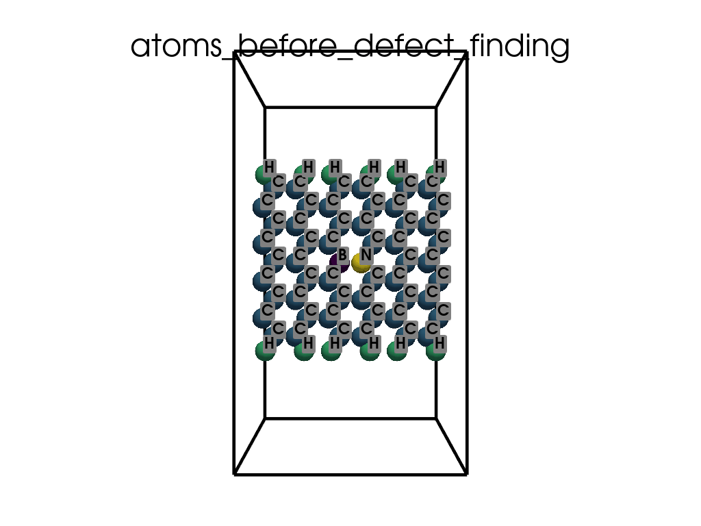
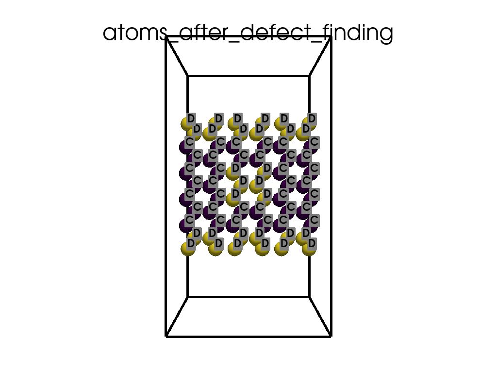

Note
Go to the end to download the full example code.
Finding defects in a POSCAR file#
In this example, we’ll demonstrate how to automatically find defects in a POSCAR file
Let’s get started!
import os
from itertools import product
import numpy as np
import pyvista as pv
import pyprocar.pyposcar as p
from pyprocar.utils import DATA_DIR
data_dir = os.path.join(DATA_DIR, "examples", "PyPoscar", "03-defects")
# You do not need this. This is to ensure an image is rendered off screen when generating exmaple gallery.
pv.OFF_SCREEN = True
Utility function for creating GIF visualizations#
def create_gif(atoms, labels, unit_cell, save_file):
plotter = pv.Plotter()
title = save_file.split(os.sep)[-1].split(".")[0]
plotter.add_title(title)
plotter.add_mesh(
unit_cell.delaunay_3d().extract_feature_edges(),
color="black",
line_width=5,
render_lines_as_tubes=True,
)
plotter.add_point_labels(
points=atoms.points, labels=labels, show_points=False, always_visible=True
)
plotter.add_mesh(
atoms,
scalars="atoms",
point_size=30,
render_points_as_spheres=True,
show_scalar_bar=False,
)
path = plotter.generate_orbital_path(n_points=36)
plotter.open_gif(os.path.join(data_dir, save_file))
plotter.orbit_on_path(path, write_frames=True, viewup=[0, 0, 1], step=0.05)
plotter.close()
Finding defects#
print("Loading an AGNR with a defect in it")
a = p.poscar.Poscar(os.path.join(data_dir, "POSCAR-AGNR-defect.vasp"), verbose=False)
a.parse()
defects = p.defects.FindDefect(a)
print("The defects are:")
print(defects.all_defects)
print("\n\nThe warning above indicates that there are two different types of defects")
print("saving a file with the defects, defects.vasp")
defects.write_defects(filename=os.path.join(data_dir, "defects.vasp"))
print(
"Inspection of the file defects.vasp shows that the first type of defects are subtitutionals (0D), and the second are the AGRN edges (1D)"
)
tmp_a = p.Poscar(os.path.join(data_dir, "POSCAR-AGNR-defect.vasp"))
tmp_a.parse()
# Convert positions to Cartesian coordinates for visualization
atoms_before = pv.PolyData(np.dot(tmp_a.dpos, tmp_a.lat))
atoms_before["atoms"] = tmp_a.elm
labels_before = [elm for elm, point in zip(tmp_a.elm, tmp_a.dpos)]
# Define the unit cell using lattice vectors
unit_cell_comb = list(product([0, 1], repeat=3))
unit_cell = np.array(
[
comb[0] * tmp_a.lat[0] + comb[1] * tmp_a.lat[1] + comb[2] * tmp_a.lat[2]
for comb in unit_cell_comb
]
)
unit_cell_before = pv.PolyData(unit_cell)
tmp_a = p.Poscar(os.path.join(data_dir, "defects.vasp"))
tmp_a.parse()
# Convert positions to Cartesian coordinates for visualization
atoms_after = pv.PolyData(np.dot(tmp_a.dpos, tmp_a.lat))
atoms_after["atoms"] = tmp_a.elm
labels_after = [elm for elm, point in zip(tmp_a.elm, tmp_a.dpos)]
# Define the unit cell using lattice vectors
unit_cell_comb = list(product([0, 1], repeat=3))
unit_cell = np.array(
[
comb[0] * tmp_a.lat[0] + comb[1] * tmp_a.lat[1] + comb[2] * tmp_a.lat[2]
for comb in unit_cell_comb
]
)
unit_cell_after = pv.PolyData(unit_cell)
create_gif(
atoms=atoms_before,
labels=labels_before,
unit_cell=unit_cell_before,
save_file="atoms_before_defect_finding.gif",
)
create_gif(
atoms=atoms_after,
labels=labels_after,
unit_cell=unit_cell_after,
save_file="atoms_after_defect_finding.gif",
)
- 
- 
Loading an AGNR with a defect in it
WARNING: in FindDefect.find_forgein_atoms() more than two sets of atoms were found. Cluster delimited by `minima`= [12 29] , `maxima=` [ 7 15 42]
Only elements with less than 12 atoms are regarded as defects
WARNING: in FindDefect.nearest_neighbors_environment() more than two sets of atoms were found. Cluster delimited by `minima`= [15 30] , `maxima=` [10 19 40]
Only elements with environments less abundant than 15 are regarded as defects
The defects are:
[1, 2, 16, 17, 19, 20, 22, 25, 26, 27, 32, 33, 35, 36, 50, 51, 52, 53, 54, 55, 56, 57, 58, 59, 60, 61, 62, 63, 64, 65]
The warning above indicates that there are two different types of defects
saving a file with the defects, defects.vasp
Inspection of the file defects.vasp shows that the first type of defects are subtitutionals (0D), and the second are the AGRN edges (1D)
Total running time of the script: (0 minutes 9.143 seconds)